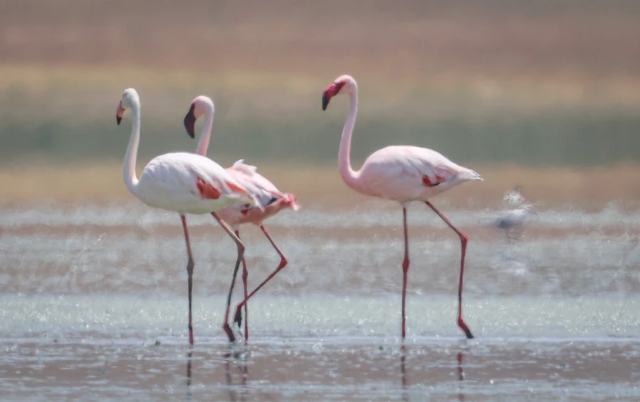

鸟类 · 动物界
大红鹳 Phoenicopterus roseus

通体粉红的大型涉禽，长腿长颈、喙形弯折，靠滤食水中的小生物为生，因羽色艳丽而被称为火烈鸟。
- 分类
- 门脊索动物门纲鸟纲目红鹳目科红鹳科属红鹳属
- 栖息环境
- 盐湖、咸水潟湖、浅海与沼泽等浅水水域，喜在开阔的浅滩集群
- 地理分布
- 非洲、南欧、中东至南亚，中国新疆、青海、内蒙古等地有迷鸟记录
- 保护级别
- IUCN 无危（LC）；在中国多为罕见迷鸟，未列入国家重点保护名录
物种志
大红鹳体长 120–145 cm，翼展 140–165 cm，体重 2–4 kg。它的羽毛从淡粉到深粉红不等，飞羽为黑色，飞行时黑白粉三色相间格外醒目。腿细长呈粉红色，颈长而柔软，喙中部向下锐弯，喙端黑色，边缘长有一排细密的板状结构，像筛子一样过滤水中的小生物。
大红鹳广泛分布于非洲、南欧、中东和南亚的盐湖、咸水潟湖与浅海，中国新疆、青海、内蒙古等地偶有迷鸟记录。它们集群生活，常在开阔浅滩上滤食卤虫、藻类、螺类和小鱼虾，粉红的羽色正来自食物中富含的类胡萝卜素。繁殖时，成鸟用泥巴堆出锥形巢，每窝产 1 枚卵，孵化 27–31 天。雏鸟出壳时为灰白色，由双亲反刍出的“红色乳汁”喂养。休息时它们常单腿站立，以减少热量散失。
形态与习性
- 食性卤虫、藻类、螺类和小鱼虾，用弯折的喙过滤水中的食物
- 体长120–145 cm
- 翼展140–165 cm
- 体重2–4 kg
- 繁殖泥巢呈锥形，每窝 1 枚卵，孵化 27–31 天
- 寿命野外约 30 年，圈养可超过 40 年
- 羽色粉红色来自食物中的类胡萝卜素
趣味知识
- 火烈鸟的粉红色并非天生，而是来自食物中的类胡萝卜素，吃得不足就会变白。
- 雏鸟出壳时是灰白色，靠双亲反刍出的红色“乳汁”喂养长大。
- 大红鹳常单腿站立休息，这种姿势可以帮助减少热量散失。
- 它们把喙倒转浸入水中过滤食物，喙内的板状结构像筛子一样截留小生物。